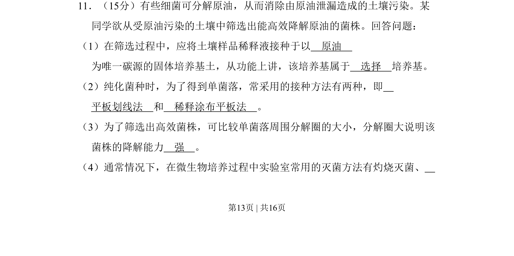
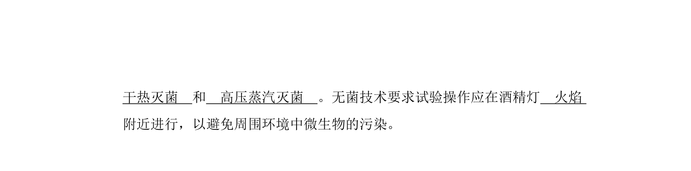
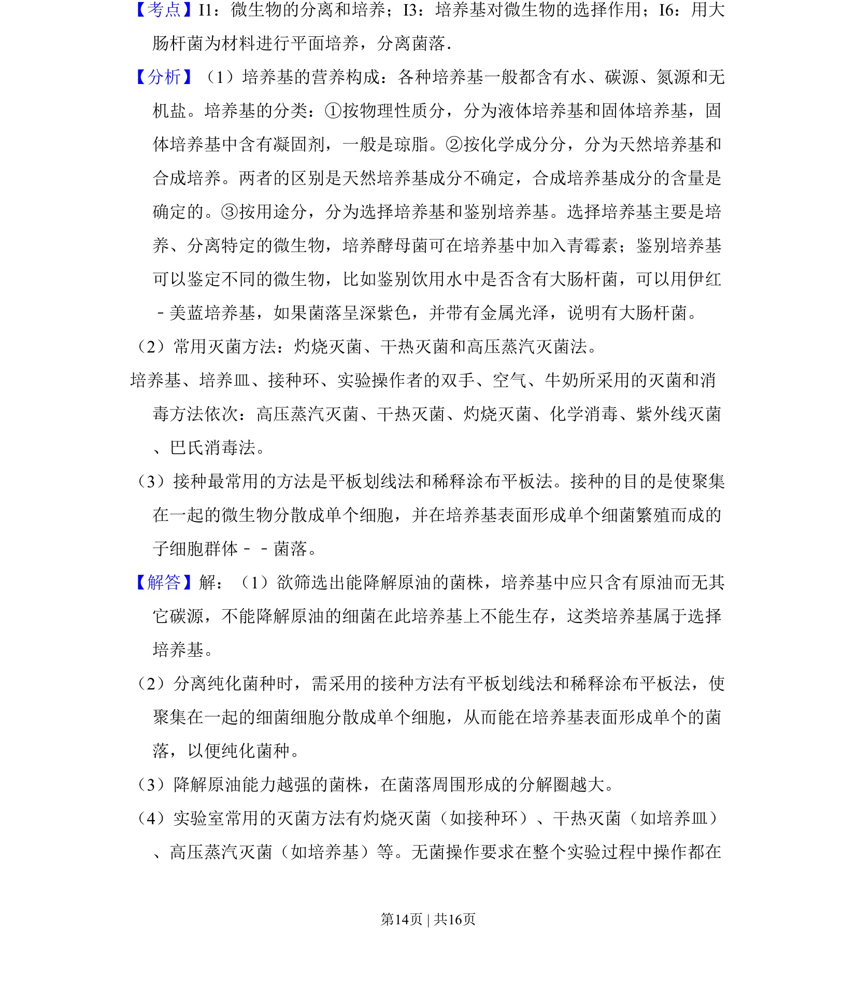
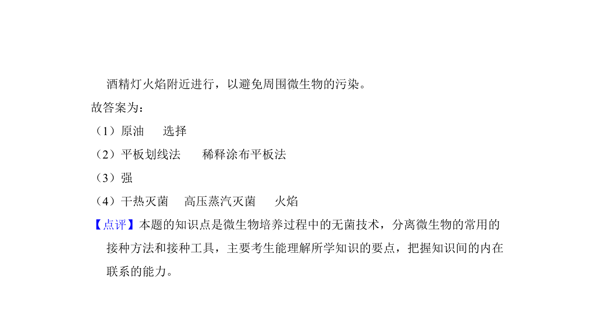

考点：选择培养基 平板划线法 稀释涂布平板法 微生物分离与筛选


该题考查从土壤中筛选原油降解菌的实验，涉及选择培养基、接种方法及降解能力判断。


📄 原 PDF 第 13 页：
素材/真题/吉林/2008-2024·（吉林）生物高考真题/2011年高考生物试卷（新课标）（解析卷）.pdf
11．（15分）有些细菌可分解原油，从而消除由原油泄漏造成的土壤污染。某 同学欲从受原油污染的土壤中筛选出能高效降解原油的菌株。回答问题： （1）在筛选过程中，应将土壤样品稀释液接种于以 原油 为唯一碳源的固体培养基土，从功能上讲，该培养基属于 选择 培养基。 （2）纯化菌种时，为了得到单菌落，常采用的接种方法有两种，即 平板划线法 和 稀释涂布平板法 。 （3）为了筛选出高效菌株，可比较单菌落周围分解圈的大小，分解圈大说明该 菌株的降解能力 强 。 （4）通常情况下，在微生物培养过程中实验室常用的灭菌方法有灼烧灭菌、